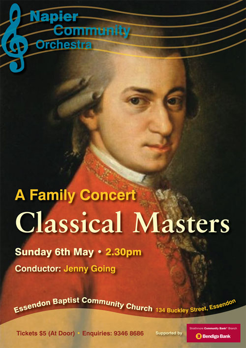

The Napier Community Orchestra
formerly The Napier Concert Orchestra
The Napier Community Orchestra is a community orchestra based in Melbourne’s Moonee Valley that meets weekly during school terms and performs throughout the year playing mostly Classical music. New works are chosen by an elected Music Committee in consultation with the Music Director and Conductor.
NAPIER COMMUNITY ORCHESTRA PRESENTS
A GREAT COMMUNITY EVENT
